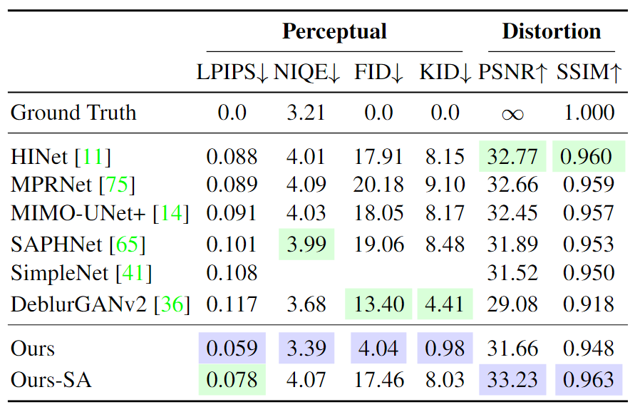
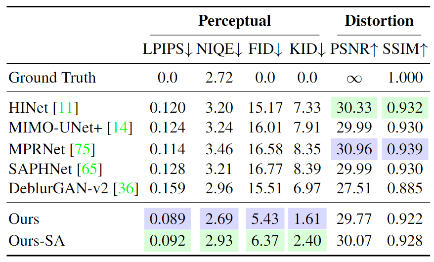
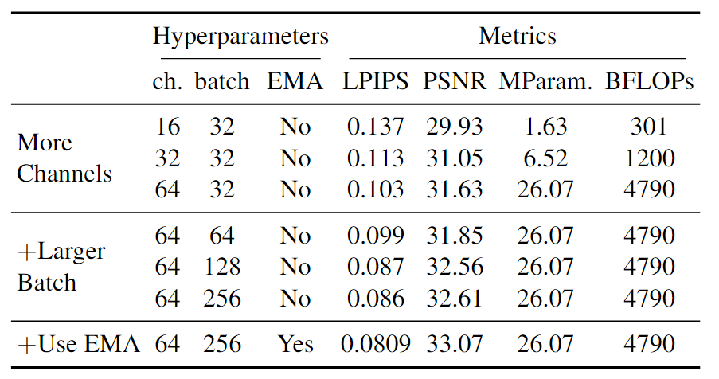

[Skim-read] Deblurring via Stochastic Refinement

- This paper is published in CVPR 2022.
Overview
Problem
- Image deblurring is an ill-posed problem, and most existing mothods are ineffective because they produce a deterministic estimate of the clean image.
- Point-estimators that directly minimize a distortion loss suffers from the problem of “regression to the mean”.
Solution
- Present a new framework for blind deblurring based on conditional diffusion models.
- Porducing a diverse set of plausible reconstructions for a given input.
Results
- A significant improvement in perceptual qulity over existing state-of-the-art methods across multiple standard benchmarks.
- Much more efficient sampling compared to typical diffusion models.
- Challenging the widely used strategy of producing a single, deterministic reconstruction.
Related Work
Diffusion Probabilistic Models
I’ve written a blog about diffusion probabilistic models (DPM). It has the derivation of the basic formulas of the DPM as well as a simple code implementation.
The Perception-Distortion Tradeoff
Blau et al. 2018 with a few additional annotations)
The ability of a model on a curve is the same. When perceptual metrics get better (smaller y-axis), distortion metrics get worse (bigger x-axis), and vice versa. Usually non-GAN models will tend to be more towards the upper left corner, while GAN models will tend to be more towards the lower right corner.
Method
This paper introduce a “predict-and-refine” conditional diffusion model, where a deterministic data-adaptive predictor is jointly trained with a stochastic sampler that refines the output of the said predictor (see Fig. 2).
the initial predictor. Note that the input and output depicted here are for the
denoiser network. (Image source: Jay et al. 2022)
The loss function of predict-and-refine diffusion model in paper is Eq. (6). $$ L_{\text{Ours}}(\theta) = \mathbb{E} \left \| \mathbf{\epsilon} - f_\theta \left ( \sqrt{\bar{\alpha}} (\underbrace{ \mathbf{x}_0 - g_\theta({\color{red} \mathbf{x}_0})}_{\text{residual}}) + \sqrt{1 - \bar{\alpha}} \epsilon, \bar{\alpha}, \mathbf{y} \right ) \right \| \tag{6} $$ Gaution! The red part of Eq. (6) is wrong. Here, $\mathbf{x}_0$ and $g_\theta$ stands for ground truth and initial predictor. The residual portion in the lower brackets should be the residual of ground truth and initial prediction. Therefore, the input to $g_\theta$ should be the blurry image $\mathbf{y}$.
Experimental Study
Quantitative Results
The “SA” suffix in the table stands for Sample Averaging, i.e. averaging over multiple samples. This operation can significantly improve the distortion metrics at the expense of the perception metrics.
Best values and second-best values for each metric are color-coded.
(Table source: Jay et al. 2022 as a screenshot) 
Best values and second-best values for each metric are color-coded.
(Table source: Jay et al. 2022 as a screenshot) 
The model in this paper achieves state-of-the-art performance across all perceptual metrics while maintaining competitive PSNR and SSIM to existing methods.
P-D tradeoff
- Inference steps (T): 10, 20, 30, 50, 100, 200, 300, 500.
Left column contains perceptual metrics vs. PSNR, and the right column
contains SSIM comparisons.(Image source: Jay et al. 2022)
Traversing the Perception-Distortion curve: The more steps sampled, the better the subjective quality, and vice versa for the objective quality.
Network Architecture Ablation Study
(Table source: Jay et al. 2022 as a screenshot) 
As the results show, all three hyperparameters were critical to the model’s performance.
References
[1] Whang Jay et al. “Deblurring via Stochastic Refinement.” CVPR 2022.
[2] Yochai Blau & Tomer Michaeli. “The Perception-Distortion Tradeoff.” CVPR 2018.
[3] Seungjun Nah et al. “Deep Multi-Scale Convolutional Neural Network for Dynamic Scene Deblurring.” CVPR 2017.
[4] Ziyi Shen et al. “Human-Aware Motion Deblurring.” ICCV 2019.